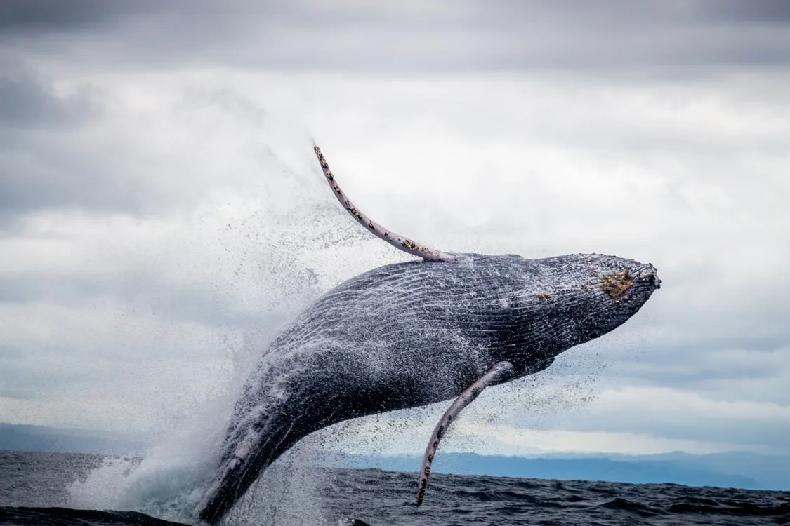

Mantén una distancia prudencial
Evita acercarte demasiado y respeta su espacio.
Ballenas: mínimo 100 m · Delfines: mínimo 50 mSi viste una ballena, un delfín u otro cetáceo, puedes compartir tu observación con la Red en pocos minutos. No necesitas saber de qué especie se trata: la información que tengas es valiosa.

Mantén la distancia y sigue las buenas prácticas. Tu seguridad y la de los animales es lo primero.
Ver buenas prácticas ↓Fecha, hora, ubicación —coordenadas o punto de referencia—, especie si logras identificarla, cuántos animales viste y qué estaban haciendo.
Para enviar las coordenadas puedes usar tu ubicación en WhatsApp o aplicaciones gratuitas como Google Maps, Geo Tracker, SailFree o Gaia GPS.
Una buena foto ayuda a confirmar la especie. No pongas en riesgo la maniobra ni te acerques más para lograrla.
¡Tienes dos opciones para reportar!
El equipo de la Red revisará la información y, si cumple los criterios, la incorporará a la base de datos y al mapa.
No necesitas tenerlo todo. Comparte la información disponible; cada dato puede ayudar a validar tu observación.

La cámara puede acercar la imagen; tú no necesitas acercarte al animal.
Toma varias fotos de distintos ángulos.
Intenta capturar la aleta dorsal, el lomo y, en ballenas, la cola cuando levanta.
Enfoca cualquier marca, cicatriz o rasgo particular.
Usa el zoom de la cámara en lugar de acercarte al animal.
Guarda la foto original, sin filtros.
Disfruta del avistamiento sin alterar su comportamiento ni poner en riesgo su bienestar.
Evita acercarte demasiado y respeta su espacio.
Ballenas: mínimo 100 m · Delfines: mínimo 50 mPermite que los cetáceos se desplacen libremente y evita bloquear su paso.
Reduce la velocidad en zonas de avistamiento y evita maniobras bruscas o aproximaciones rápidas.
No los alimentes, toques ni intentes atraer su atención mediante sonidos u otras acciones, incluidas emisiones sonoras bajo el agua.
Informa oportunamente sobre posibles enmallamientos, varamientos, animales heridos u otras situaciones que comprometan su bienestar.
No intentes liberarlo ni moverlo por tu cuenta. Mantén la distancia, toma fotos o video desde un lugar seguro y comunica la situación de inmediato.
Instituto del Mar del Perú
(+51) 975 345 546